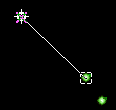

SPIELEINSTELLUNGEN
NETWORK SPIELE
STARTEN DES SPIELES
SCHIFFSINFORMATIONEN
FLOTTEN BAUEN
SPIELKOMMANDOS
STRATEGIEFÜHRER
|
|
Inhaltsverzeichnis:
SPIELEINSTELLUNGEN |
|
SPIEL:
Das Spiel in Galactica bezieht sich auf das Bauen von Sternenschiffen und die Nutzung dieser, um die Galaxie zu kolonialisieren, Ihr Territorium zu beschützen und andere Spieler im Kampf zu besiegen. Ihre Technologiestufe ist entscheidend. Höhere Technologiestufen erlauben es Ihren Schiffen, sich schneller zu bewegen und verschaffen einen Vorteil im Kampf gegen Schiffe mit geringerer Technologiestufe. Ihre Sternensysteme verteidigen sich ebenfalls gegen angreifende Schiffe, basierend auf deren Technologiestufen. Alle technischen Entwicklungen finden in Ihrem Sternensystem statt. Je höher Ihre Technologiestufe, um so größer die Schwierigkeit, zur nächsten Stufe vorzurücken und um so komplexer der Bau von Sternenschiffen. Wachstum ist entscheidend. In einem wachsenden System gibt es mehr Laboratorien auf der Suche nach neuen Ideen und mehr Fabriken, welche zuständig für den Bau von high-tech Bestandteilen für Sternenschiffe sind. Wenn Ihr Wachstum mit Ihrer Technologie nicht Tempo halten kann, wird es hunderte von Spielzügen dauern, ein modernes Schiff zu bauen, auch wenn Sie wissen, wie man es baut. |
|
SPIELEINSTELLUNGEN:
Ob es ein Einzel- oder mehrere Spieler sind, der Spielstart ist ähnlich. Bevor Sie mit dem Spiel beginnen können, müssen Sie Ihr Universum aufbauen.
Computer Gegenspieler: |
|
| Spieloptionen: Die Einstellung Schnelles Spiel veranlaßt alle Schiffe, sich doppelt so schnell zu bewegen und erhöht die Produktionsrate für sämtliche Bestandteile des Spieles. Damit ist das Spiel schnell gespielt. Sternendichte kontrolliert die Anzahl der Sternensysteme, die in Ihrem Spiel sein werden. Die Dichte basiert auf einer Skala von 1 bis 10, mit 1 als kleinste Zahl. Es ist empfehlenswert, die automatische Einstellung für erstmalige Spieler beizubehalten. Sektorgröße gibt an, wie groß das Universum ist. Auch wenn Sie nur mit einem sehr kleinen Sektor beginnen, steht Ihnen mehr als genug Raum zur Eroberung zur Verfügung. |

|
| OBEN | |
|
EINEM NETWORK SPIEL BEITRETEN:
1. Über Dateimenü, Spiel Beitreten |
|
5. Das Spieler-Wählen-Fenster wird sich öffnen und eine Liste von im
Spiel registrierten Spielen aufzeigen 6. Wählen Sie Ihren Spielernamen von der Liste. Sollten Sie einem neuen Spiel beitreten, müssen Sie eine Spalte gekennzeichnet mit "Öffnen" wählen und Ihren Namen und optionsweise Passwort eingeben. Sie können in keiner Spalte gekennzeichnet für Computerspieler beitreten. 7. Klicken Sie auf "Beitreten" (es wird umbenannt zu "Erneut Beitreten", sollten Sie dieses Spiel zuvor gespielt haben) Notiz: - Sollten Sie als Online-Spieler beitreten, werden alle anderen Verbindungen wegfallen. Dies erlaubt es Ihnen, erneut beizutreten, falls Sie zum Gastgeber die Verbindung verlieren und dieser glaubt, Sie wären noch immer online. - Damit Sie Ihr Passwort beim nächsten Spiel nicht erneut eingeben müssen, können Sie die Passwort-Speichern-Box anklicken, und Ihr Passwort ist für das nächste Mal gespeichert. |
|
| OBEN | |
|
STARTEN DES SPIELES:
Das Spiel beginnt mit Ihnen und Ihren Gegnern in einem sehr frühen
Entwicklungsstadium. Sie besetzen Ihr Heimat-Sternensystem, und weiter
nichts. Zur rechten des Bildschirms befinden sich Informationen
über Ihr Heimatsystem.
Sie werden sofort bemerken, daß Ihr System bald mit dem Bau eines
Kolonieschiffes fertig ist. Das Kolonieschiff wird zuerst produziert, da
es das einzige Schiff ist, welches Systeme kolonialisieren kann, damit
diese dann als Teil Ihres Imperiums besetzt werden können.
Die Technologiestufe ist jene Stufe, die in diesem Sternensystem zur
Verfügung steht. Je größer die Zahl, um so weiter ist
das System technologisch fortgeschritten, und um so stärker und
schneller werden die im System gebauten Sternenschiffe sein. Die Schiebebalken weiter unten zeigen die Produktionsstufen des Systems
an. Zu Beginn des Spieles sind diese alle gleich. Das bedeutet,
daß jedes Produktionsfeld die gleiche Aufmerksamkeit erhält.
Klicken Sie auf die Schiebebalken, um Stufen zu erhöhen oder zu
verringern. Die Produktionsstufen sind miteinander verbunden, wobei die
Erhöhung einer Stufe zur Verringerung einer anderen führt.
Bedenken Sie, dass es einige Zeit dauert, die Produktivität eines
Sternsystems zu ändern. Es kann unter Umständen einige
Spielzüge dauern, bis sich Ihre Produktionsstufen den neuen
Einstellungen angepaßt haben. |
|||||||||||||||||||||||||||||||||||||||||||||||||||||||||||||||||||||||||||||||
|
Um einen Überblick über Ihren Sektor zu erlangen, können
Sie die Zoom-Knöpfe oberhalb der Karte betätigen. Gleich
daneben ist der Spielzug-Beenden-Knopf. Dieser Knopf gibt an, daß
Sie all Ihre Züge für diesen Spielzug ausgeübt haben.
Sollten Ihre Gegner bereits deren Züge vervollständigt haben,
wird der nächste Spielzug beginnen. (In einem Spiel für
Einzelspieler werden die Züge vom Computer recht schnell beendet,
wobei nicht auf diese gewartet werden muss). Zu Anfang wird es wenig
Action geben, und die Züge sind schnell beendet. Es gibt Tastatur Abkürzungen für Kommandos, welche oft genutzt werden (wie z.B., Zoom oder Spielzug Beenden). Die Abkürzungen werden im unteren, rechten Feld der Karte aufgezeigt, wenn Sie mit dem Cursor (Pfeil) über den Knopf gehen. |
|||||||||||||||||||||||||||||||||||||||||||||||||||||||||||||||||||||||||||||||
| OBEN | |||||||||||||||||||||||||||||||||||||||||||||||||||||||||||||||||||||||||||||||
|
|
|||||||||||||||||||||||||||||||||||||||||||||||||||||||||||||||||||||||||||||||
|
SCHIFFSINFORMATIONEN:
Es gibt vier Klassen von Schiffen, welche ein System produzieren kann: Abwehrsatelliten, Zubringerschiffe, Kolonieschiffe und Kampfschiffe. Hier eine kurze statistische Zusammenfassung von diesen: |
|||||||||||||||||||||||||||||||||||||||||||||||||||||||||||||||||||||||||||||||
|
|||||||||||||||||||||||||||||||||||||||||||||||||||||||||||||||||||||||||||||||
 |
|||||||||||||||||||||||||||||||||||||||||||||||||||||||||||||||||||||||||||||||
|
Abwehrsatellit: Diese Schiffe sind stationäre Abwehrstationen, welche das Sternensystem, in welchen sie hergestellt worden, überwachen. Sie sind extrem schnell zu Bauen und bieten maximale Abwehr. Zubringerschiff: Diese Schiffe sind technologische Tansportschiffe. Ihre Technologiestufen werden sich erhöhen, sollten sie in Kontakt mit Sternensystemen einer höheren Technologiestufe kommen als die eigene. Dies hilft Ihnen, Ihre Technologie zu all Ihren besetzten Sternensystemen zu verbreiten, ohne von der Produktion von Schiffen oder vom Wachstum abzulenken. Diese Schiffe haben jedoch keine Kampfeigenschaften. Kolonieschiff: Diese Schiffe sind das Rückrat Ihres Erfolges. Nur diese Schiffe können Sternensysteme kolonialisieren, damit Ihre Population diese besetzen kann. Sie sind kostenaufwendig, da ihre Produktion sehr viel Zeit in Anspruch nimmt. Glücklicherweise ist sich Ihr Schiffsaufseher dessen bewußt und wird einem Kampf aus dem Wege gehen, auch wenn andere Ihrere besten Schiffe dafür geopfert werden müssen. Kampfschiff: Diese Schiffe haben die größte Macht unter Ihren Streitkräften. Sie sind zum Kämpfen hergestellt, und weiter nichts. Sie haben ein spezielles Talent, welches dem der Kolonieschiffe ähnelt - sie können Technologie transferieren. Sie sind jedoch nicht so schnell wie Zubringerschiffe und werden vorzüglich im Kampf eingesetzt. |
|||||||||||||||||||||||||||||||||||||||||||||||||||||||||||||||||||||||||||||||
|
Schiffsnavigation
Schiffe können ausgewählt werden, indem man auf diese in der Sektoransicht klickt, oder über die Schiffe im Systemfeld. Wenn ein Schiff ausgewählt ist, ist das Schiffsnavigations-Feld aktiviert und der Kurs des Schiffes wird als Serie von Wegespunkten aufgezeigt. Das momentane Entfernungziel des Schiffes ist in Blockschrift angegeben. Wenn Sie auf einen Wegespunkt klicken, können Sie Operationen an diesem vornehmen, z.B. können Sie diesen löschen, indem Sie auf "Löschen" klicken, oder ihn ändern, indem Sie auf "Einrichten" klicken. "+" (Hinzufügen) erlaubt es Ihnen, einen neuen Wegespunkt zum Kurs hinzuzufügen und verhält sich ähnlich wie "Einrichten". Beides, "Einrichten" und "+", werden mit einem Klick aktiviert und bleiben aktiv bis Sie auf ein Entfernungsziel im Sektor klicken oder das ganze abbrechen, indem Sie ein zweites Mal auf den Knopf klicken. Sollte das gewollte Entfernungsziel nicht in der Sektoransicht sichtbar sein während Sie den Kurs ausmachen, können Sie die Scrolleiste nutzen. Es gibt ausserdem einige Knöpfe, welche den gesamten Kurs beeinflussen. "Alles Löschen" löscht den gesamten Kurs. "M" speichert den momentanen Kurs oder, sollte bereits ein anderer Kurs gespeichert sein, löscht diesen und speichert den neuen Kurs an der Stelle des anderen. "Umdrehung" (Loop) fordert das Schiff auf, den Kurs zu wiederholen: wenn das Schiff am Ziel angekommen ist, begibt es sich sofort zur ursprünglichen Ausgangsposition zurück und beginnt den Kurs erneut. Letztendlich, "Anruf" (Call) fordert das Schiff auf, zu Beginn des nächsten Spielzuges Ihre Aufmerksamkeit zu erlangen. Sternensysteme kolonialisieren Wenn Sie ein Kolonieschiff, alleine oder als Teil einer Flotte, zu einem
eigentumslosen Sternesystem schicken, wird es dieses kolonialisieren.
Das System wird die Technologiestufe des Kolonieschiffes
übernehmen, wird aber als neue Kolonie nur wenig
Produktionskapazität aufweisen. Technologie Transferieren Sie können auch Ihre Zubringer nutzen, um fortgeschrittene Technologie zu Ihren neuen Kolonien zu bringen. Senden Sie einfach Ihren hi-tech (mit höchster Technologie) Zubringer zu jener Kolonie, welche Sie verbessern möchten. Bei Ankunft wird das Schiff Informationen von der eigenen Bibliothek auf die Kolonie übertragen und damit die Kolonie der eigenen Technologiestufe anpassen. Dies ändert natürlich nichts am Wachstum der Kolonie, womit es einige Zeit dauern wird, bis die Produktionskapazität der Kolonie der Technologie derselben gleichgestellt ist. Sternenschiffe und Flotten der Feinde Angreifen Wenn ein Schiff/Flotte ein Gegnerschiff/-flotte abfängt, wird es diese attakieren. Je stärker die eigenen im Vergleich zu den Gegnerschiffen, um so besser sind die Chancen, den Kampf zu gewinnen. Die besiegten Schiffe oder Flotten werden komplett zerstört, und es bleibt nur Schrott zurück. Der Gewinner wird den Kurs im nächsten Spielzug wieder aufnehmen, sollte er weitere Entfernungsziele haben. Wenn ein Schiff oder eine Flotte zerstört sind, werden Sie eine Explosion im Kampffeld sehen. Der Gewinner wird aus dieser hervorkommen. In das Sternensystem eines Feindes Eindringen Wenn ein Schiff oder eine Flotte in einem Gegnersystem ankommt, wird diese(s) attakieren. Wenn Schiffe im System stationiert sind, muss Ihr Schiff jedes einzelne bekämpfen bevor Sie den Planeten attakieren können. Die Abwehrschiffe werden einen Vorteil über ihre normale Technologiestufe hinaus haben, abhängig von der Anzahl der Abwehrschiffe am Stern. Schließlich ist deren Abwehr koordiniert. Ihr Schiff muß dann die fixierte Abwehr des Systems durchbrechen, um Erfolg zu haben. Die Abwehr basiert auf der Technologiestufe des Systems, aber die Abwehrkräfte des Systems sind im Nachteil, da sie unter Angriff von mobilen Raumfahrzeugen stehen. Das System wird an Produktionskapazität verlieren, aufgrund von Schäden durch die Angriffe. Es wird noch mehr leiden, sollte es verlieren. Mehr über Kampf Jedesmal, wenn mehr als nur ein Schiff im Kampf involviert ist, werden die Nicht-Kampfschiffe vom Kampf ferngehalten bis alle Kampfschiffe zerstört sind. Zubringer- und Kolonieschiffe zählen zu den Nicht-Kampfschiffen. Zubringerschiffe besitzen keinerlei Kampffähigkeit und können dem Feind daher keinen Schaden zufügen. Bezogen auf die Technologiestufe sind Kolonieschiffe genauso stark wie Kampfschiffe. Da sie jedoch wertvolle Sternenschiffe mit spezieller Aufgabe sind, werden sie der Gefahr so oft als möglich entzogen. Schaden an einem Schiff, welches nicht zerstört wurde, kann repariert werden, indem man das Schiff zu einem eigenen Planeten schickt und es dort über die nächsten Spielzüge verweilen läßt. Je höher die Technologiestufe des Planeten, um so schneller kann das Schiff repariert werden. Ein Schiff, welches sich auf Streife befindet kann nicht repariert werden - es muß zuerst von der Streife abgezogen werden. Da Satelliten niemals von ihrer Streife abgezogen werden können, können diese auch niemals repariert werden. Teile des Spieles, welche Aufmerksamkeit verlangen Normalerweise reagieren Teile des Spieles auf Ihre Kommandos ohne weitere Einmischung. Manchmal benötigen einige dieser Teile weitere Instruktionen und fragen auch danach. Wenn ein Schiff z.B. das Ende eines programmierten Kurses erreicht hat, anstatt auf Ihre Reaktion zu warten, wird es Sie benachrichtigen. Auch wenn ein Schiff neu erschaffen wurde, wird es nach Ihrer Aufmerksamkeit fragen, damit Sie nicht dessen Existenz vergessen. Zu Beginn eines jeden Spielzuges wird jenes Objekt, welches sofortige Aufmerksamkeit benötigt, ein Geräusch ausstoßen. Nachdem Sie mit diesem Objekt gehandelt haben, können Sie die TAB-Taste betätigen, um sich um das nächste Objekt, welches Ihre Aufmerksamkeit benötigt, zu kümmern. Sollten Sie einen Spielzug beenden, ohne sich um die Objekte gekümmert zu haben, werden Sie eine Nachricht erhalten. Sie können dann zurückgehen, um diese Aufgabe zu vervollständigen. |
|||||||||||||||||||||||||||||||||||||||||||||||||||||||||||||||||||||||||||||||
 |
|||||||||||||||||||||||||||||||||||||||||||||||||||||||||||||||||||||||||||||||
|
Die Schiffsdiagnostiken werden aufgezeigt, indem Sie auf das Schiffsbild
klicken. Neben dem Namen des Schiffes befindet sich eine grüne
Schadensanzeige. Eine einfache Daumenregel...grün ist gut, rot ist
schlecht. Schaden kann repariert werden, indem Sie in einem besetzten
Sternensystem über einige Spielzüge verweilen. Je höher
die Produktionsstufe, um so schneller wird repariert. Die nachfolgende
Nummernsequenz zeigt die Technologiestufe, Bewegung und Kraft an, z.B.,
Satellit, schwer beschädigt, Technologiestufe von 31, keine
Bewegung und eine Kraft von 31.
Wenn Schiffe in einer Flotte sind, wird die Kraft aller Schiffe zusammen angezeigt. Je höher die Kraft, um so größer die Chance, einen Kampf zu gewinnen. |
|||||||||||||||||||||||||||||||||||||||||||||||||||||||||||||||||||||||||||||||
| OBEN | |||||||||||||||||||||||||||||||||||||||||||||||||||||||||||||||||||||||||||||||
|
|
|||||||||||||||||||||||||||||||||||||||||||||||||||||||||||||||||||||||||||||||
|
FLOTTEN BAUEN:
Im Kampf ist überragende Kampfkraft die beste Strategie, und eine koordinierte Attacke mit großer Kampfkraft ist oft der einzige Weg zum Erfolg. Flotten sind ein wichtiges Element dieser Strategie. Sie sind eine Gruppe von Schiffen, welche als Einheit operieren. Die Vorteile sind offensichtlich; mehr Kraft und bessere Koordination! Das Bauen von Flotten ist ein Muß im Spiel. Es gibt mehrere Möglichkeiten, diese zu kreieren. Zwei davon möchten wir Ihnen nun vorstellen: Treffpunkte und sich treffende Schiffe im All. |
|||||||||||||||||||||||||||||||||||||||||||||||||||||||||||||||||||||||||||||||
| Treffpunkte: Um Treffpunkte zu kreieren, wählen Sie ganz einfach ein Ziel aus und teilen Schiffe diesem zu. Es ist eine großartige Methode, eine Flotte mit wenig oder keinem Management zu bauen. | |||||||||||||||||||||||||||||||||||||||||||||||||||||||||||||||||||||||||||||||
| 1. Kreieren Sie einen Treffpunkt, indem Sie auf "Neuer Treffpunkt" im "Gehen Zu"-Menü klicken. Ihr Cursor (Pfeil) wird sich in ein Kreuz umwandeln. |
|
||||||||||||||||||||||||||||||||||||||||||||||||||||||||||||||||||||||||||||||
| 2. Wählen Sie Ihren Treffpunkt aus, indem Sie auf das Spielfeld klicken. Treffpunkte können im offenen Raum, in Sternensystemen, oder auf anderen Schiffen sein. Wenn Sie Ihren Treffpunkt selektieren, wird sich das Kreuz in ein grünes "X" umwandeln, und Sie werden dazu aufgefordert, den Punkt zu benennen. Es ist nicht unbedingt notwendig, daß Sie diese Punkte benennen, aber es sorgt für leichteres Management, sollten Sie viele davon nutzen. |
 |
||||||||||||||||||||||||||||||||||||||||||||||||||||||||||||||||||||||||||||||
| Als nächstes werden Sie die Systeme selektieren, welche Schiffe für den Treffpunkt produzieren sollen. | |||||||||||||||||||||||||||||||||||||||||||||||||||||||||||||||||||||||||||||||
| In das Management eines jeden Sternensystems ist die automatische Funktion, neu konstruierte Schiffe zum Treffpunkt zu senden, eingebaut. Wenn Ihr Punkt erst einmal kreiert und benannt ist, muß nun das Sternensystem, welches die Schiffe sendet, ausgesucht werden. | |||||||||||||||||||||||||||||||||||||||||||||||||||||||||||||||||||||||||||||||
| 1. Wählen Sie ein Sternensystem aus und klicken Sie auf "Neues Schiffsentfernungsziel". Diese Funktion ist der des "Wegespunkt Hinzufuegen" ähnlich. Wenn Sie es anklicken, wird sich der Cursor (Pfeil) in ein Kreuz umwandeln. |
|
||||||||||||||||||||||||||||||||||||||||||||||||||||||||||||||||||||||||||||||
|  | |||||||||||||||||||||||||||||||||||||||||||||||||||||||||||||||||||||||||||||||
| 2. Bewegen Sie das Kreuz über den Treffpunkt und beachten Sie, dass sich das grüne "X" pink färbt. | |||||||||||||||||||||||||||||||||||||||||||||||||||||||||||||||||||||||||||||||
 |
|||||||||||||||||||||||||||||||||||||||||||||||||||||||||||||||||||||||||||||||
| 3. Klicken Sie auf dieses "X", und die Aufgabe ist vollbracht. Das ausgewählte Sternensystem wird nun alle neuen Einheiten zum Treffpunkt schicken solange es kein anderes Kommando erhält. | |||||||||||||||||||||||||||||||||||||||||||||||||||||||||||||||||||||||||||||||
| Schiffe kombinieren: Eine schnelle und leichte Art, Flotten zu bauen ist, indem Sie Schiffe einfach gruppieren. Wählen Sie ein Schiff aus, klicken Sie auf <A> (Wegespunkt Hinzufügen) und wählen Sie dann das Schiff aus, mit welchem Sie das vorhergehende gruppieren möchten. Wenn die beiden Schiffe zusammenkommen, wird automatisch eine Flotte gegründet und derselben eine Nummer gegeben. Sie können die Flotte umbenennen, um ihr somit Ihre persönliche Marke aufzusetzen. | |||||||||||||||||||||||||||||||||||||||||||||||||||||||||||||||||||||||||||||||
| OBEN | |||||||||||||||||||||||||||||||||||||||||||||||||||||||||||||||||||||||||||||||
|
|
|||||||||||||||||||||||||||||||||||||||||||||||||||||||||||||||||||||||||||||||
|
SPIELKOMMANDOS:
Hier eine Liste von Kommandos und Funktionen: |
|||||||||||||||||||||||||||||||||||||||||||||||||||||||||||||||||||||||||||||||
|
|
||||||||||||||||||||||||||||||||||||||||||||||||||||||||||||||||||||||||||||||
| Von all den genannten Kommandos ist "Wegespunkt Hinzufügen" am wichtigsten. Einen Wegespunkt hinzufügen bedeutet ganz einfach, einem Schiff ein Entfernungsziel zu geben. Das Entfernungsziel können ein Feindesschiff, eine Feindesflotte, das System eines Feindes, ein freundliches System, eine freundliche Flotte oder leerer Raum sein. Jedes Schiff hat eine bestimmte Funktion und wird unterschiedliche Ergebnisse erzielen. Hier ist eine Liste von Entfernungzielen und Resultaten: | |||||||||||||||||||||||||||||||||||||||||||||||||||||||||||||||||||||||||||||||
|
|||||||||||||||||||||||||||||||||||||||||||||||||||||||||||||||||||||||||||||||
| OBEN | |||||||||||||||||||||||||||||||||||||||||||||||||||||||||||||||||||||||||||||||
|
|
|||||||||||||||||||||||||||||||||||||||||||||||||||||||||||||||||||||||||||||||
|
OFFIZIELLER GALACTICA STRATEGIEFÜHRER: von Michael <wardy@iname.com> In Galactica geht es um die Kolonialisierung aller Sternensysteme in der Galaxie. Wie Sie dies anstellen, ist alleine Ihrem Genie überlassen. Resourcenmanagement ist ein wichtiger Bestandteil des Spieles. Vorsichtige Handhabung Ihrer besetzten Systeme wird Ihre Produktivität maximieren und Abfälle vorbeugen. * Zuerst versuche ich so viele nahegelegene Planeten als möglich
zu kolonialisieren, ohne in einen Kampf zu geraten. In diesem Stadium
kreiere ich ausschließlich Kolonieschiffe - nicht einmal
Satelliten. * Neu kolonialisierte Planeten können entweder Kolonien oder
Kampfschiffe sein. Dies ist abhängig von der Anzahl der
lokal-gelegenen unbewohnten Systeme. Wenn viele vorhanden sind,
benötige ich alle Kolonien, die ich bekommen kann! Ansonsten ist es
an der Zeit, eine Kampfschifflotte zu bauen. * Wenn ich einige Systeme aufgebaut habe, veranlasse ich den
Heimatplaneten, Zubringerschiffe zu schaffen. Da dies sehr schnell
vonstatten geht, kann ich nun die Schiebebalken zur Verringerung des
Schiffbaus und Verstärkung des Wachstums und der Technologie
anpassen. Ich veranlasse den Planeten, aller 6-8 Spielzuege ein
Zubringerschiff zu bauen. Je mehr Planeten im Spiel sind, um so mehr
Zubringer benötigen Sie. Deshalb, handelt sich es um ein
großes Spiel, veranlasse ich den Bau von Zubringern aller 2-4
Spielzüge. * Sind die Zubringer erst einmal in der Heimat erschaffen worden, ist
die Erforschung der Technologie auf kolonialisierten Planeten
unnötig. Ich setze den Schiebebalken daher auf Null. Danach
verbreite oder fange ich Technologie ein. Dies ist ein wenig schwierig,
da es das Anklicken vieler Systeme verlangt, um herauszufinden, welche
am meisten von neuer Technologie profitieren können. * Wenn ich in die Nähe anderer Spieler gerate, stelle ich
Satelliten auf. * Systeme, die sich weit hinter den "Frontlinien" befinden, sind nun
bereit, Kampfschiffe zu bauen. Ich veranlasse 1,2 oder 3 Planeten, eine
Flotte mit Schiffen zu versorgen. Die "auto-dest" Funktion ist dann sehr
praktisch. Sollten Ihre Flotten einige Kämpfe überstehen,
hilft die Versorgung der Flotte mit neuen Schiffen aus, um für
weitere Kämpfe bereitzusein. Falls nicht, beginnen Sie erneut. * Sollte der Feind Schiffe gen Heimat schicken, beginne ich, Planeten
hinter der Linie mit Satelliten zu beschützen. Jedoch nur, wenn
diese bedroht sind. * Wenn einige Flotten im Umkreis vorhanden sind, veranlasse ich ein
System, Kolonien zu erschaffen. Dies geschieht am besten in der
Nähe der Frontlinie, da Kolonien sehr langsam sind und vorerst
Satelliten gebaut werden müssen. Manchmal benötige ich jedeoch
mehr als nur eine, z.B., wenn ich in eine Ecke der Karte gedrängt
wurde und 2 oder mehr Fronten habe. * Wenn alte Flotten für eine Weile gedient haben, werden sie
langsamer als die neuesten Schiffe. Wenn dies passiert, sende ich eine
neue Kolonie, die den alten Flotten beitritt, um sofort Systeme zu
kolonialisieren. Deswegen ist Flottenmanagement wichtig, da langsame
Kolonien wie auch langsame Kampfschiffe aus dem Wege gezogen werden
müssen und neue Kolonieschiffe gesendet werden können. * Normalerweise sind die Kolonieschiffe jedoch zu langsam, und ich
schicke sie in alle Richtungen der Karte während sie gebaut werden.
Ich versuche, jeweils ein Kolonieschiff in unmittelbarer Nähe eines
jeden Feindesplaneten zu halten, damit sie vor Ort sind, wenn die
Kampfflotten eintreffen. Manchmal werden sie abgeschossen, aber dies
geschieht nicht allzu oft. * Ich schieße nun ein System nach dem anderen ab, oder
beauftrage so viele starke Flotten wie ich aufbieten kann dazu. * Zubringer werden in die Galaxie geschickt, um meine Planeten auf
dem Laufenden zu halten. * Während die Flotten der Feinde stärker werden,
bekräftige ich die Satelliten meines Systems, um sicherzugehen,
diese können einer Attacke standhalten. Normalerweise bedeutet dies
eine Stärke von 10, dann 50, dann 100, und in sehr engen Spielen
1000. * Beschädigte Flotten dürfen auf einem Planeten ruhen bis
dieser kolonialisiert ist und sie vollständig repariert sind. Dann
müssen sie zurück an die Arbeit. * Ich nutze eine Flotte auch, um auf einen Planeten achtzugeben bis
dessen Satelliten stark genug sind. * Ich attackiere nicht mit einzelnen Schiffen, nur mit Flotten. Und auch nur dann, wenn die Flotte doppelt so stark wie das Angriffsziel ist! Ausnahme ist, sollte ein einzelnes Feindesschiff sich einem meiner Schiffe oder Systeme nähern. Ich füge dann einen Wegespunkt zu zwei der Schiffe hinzu, welche auf dem Weg zu einer Flotte sind, um den Feind abzufangen und danach der Flotte beitreten, sollte diese überleben. |
|||||||||||||||||||||||||||||||||||||||||||||||||||||||||||||||||||||||||||||||
| OBEN | |||||||||||||||||||||||||||||||||||||||||||||||||||||||||||||||||||||||||||||||